무선설비기사 (2005-03-06 기출문제)
1과목: 디지털 전자회로
1. 다음 그림의 회로는?
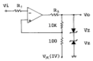
- 크램프 회로
- 차동증폭 회로
- 슬라이서 회로
- 쉬미트 트리거 회로
(정답률: 알수없음)

2. 다음 회로는 어떤 플립플롭을 만들기 위해 설계한 것인가?
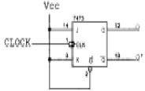
- SR 플립플롭
- JK 플립플롭
- T형 플립플롭
- D형 플립플롭
(정답률: 알수없음)
3. 에미터 접지(CE) 증폭기의 특징 중 거리가 가장 먼 것은?
- 전압이득이 1이상이다.
- 주로 버퍼(Buffer)로서 사용한다.
- 전류이득이 1이상이다.
- Ri , Ro 는 RS , RL 에 따라 그다지 변동하지 않는다.
(정답률: 알수없음)
4. 연산증폭기를 사용한 아날로그 계산기에서 미분기 대신 적분기를 사용하는 가장 큰 이유는 ?
- 적분기의 회로가 간단하다.
- 적분기는 비선형이다.
- 적분기의 계산속도가 빠르다.
- 적분기는 잡음특성이 좋다.
(정답률: 알수없음)
5. 그림과 같은 트랜지스터 회로에서 Q1의 주된 역할은 ? (단, Q1과 Q2의 특성은 동일하다고 한다.)
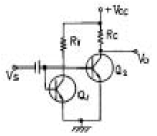
- 입력 신호를 증폭한다.
- Q2와 함께 한 개의 PNP 트랜지스터 역할을 한다.
- 출력 전압 Vo를 일정히 유지하는 역할을 한다.
- 온도 변화에 따른 바이어스 안정에 기여한다.
(정답률: 알수없음)
6. 이득 40[㏈]의 저주파 증폭기가 6[%]의 의율을 가지고 있을 때 이것을 1[%]로 개선하기 위해서는 약 얼마의 전압부궤환율(β)을 걸어주어야 하는가? (단, log105 = 0.699, log106 = 0.778, log107 = 0.845)
- 13[㏈]
- 19[㏈]
- 26[㏈]
- 33[㏈]
(정답률: 알수없음)
7. 다음 Karnaugh도를 간략화한 논리식은 ?
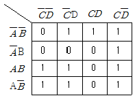
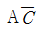
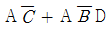
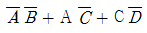
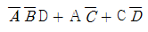
(정답률: 알수없음)
8. 그림의 논리회로를 간소화 하였을 때 출력 X는 ?
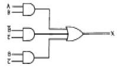
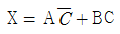
- X = A+B
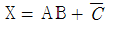
- X = AB
(정답률: 알수없음)
9. 그림의 연산증폭기 회로에서 Vo의 출력식은 ?
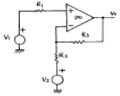
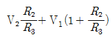
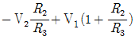
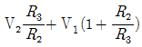
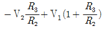
(정답률: 알수없음)
10. 그림에서 Vi = Vm sin α일 때 부하 저항 RL 양단에 나타나는 직류출력 전압은? (단.
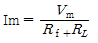
는 다이오드의 순방향 저항이다.)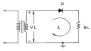
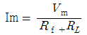
- Im RL
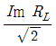
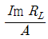
(정답률: 알수없음)
11. 수정진동자의 병렬공진주파수에서의 리액턴스는 ?
- 무한대
- 0
- 순용량성 리액턴스
- 순저항성 리액턴스
(정답률: 알수없음)
12. 디지털 시스템에 필요한 클럭의 요구 조건 중 거리가 먼 것은?
- High 및 Low 레벨 전압이 안정할 것
- 상승 및 지연 시간이 장시간일 것
- 주파수가 안정할 것
- 수정발진기는 클럭의 요구 조건을 만족할 것
(정답률: 알수없음)
13. 그림과 같이 T형 플립플롭을 접속하고 첫번째 플립플롭에 1,000[㎐]의 구형파를 해주면 최종 플립플롭에서의 출력주파수는 ?
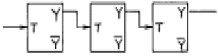
- 1000[㎐]
- 500[㎐]
- 250[㎐]
- 125[㎐]
(정답률: 알수없음)
14. 여러 신호를 단일 회선을 이용하여 공동으로 전송하는데 필요한 장치는 ?
- 엔코더(encoder)
- 디코더(decoder)
- 디멀티플렉서(demultiplexer)
- 멀티플렉서(multiplexer)
(정답률: 알수없음)
15. 그림과 같은 기본 발진회로에서 증폭기 A의 전압이득이 50일 때, 귀환회로 β의 귀환율은 얼마인가?
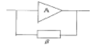
- 0.01
- 0.02
- 0.⑤
- 0.1
(정답률: 알수없음)
16. 그림의 회로에서 연산증폭기의 증폭도 A가 충분히 클 때 입력단자에 0.2[V]의 전압을 입력시켰다면 출력전압은 ?
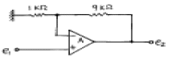
- 2[V]
- -2[V]
- 0.02[V]
- -0.02[V]
(정답률: 알수없음)
17. 다음 회로에서 A,B,C의 세 입력이 다같이 (+)Vcc 레벨일 경우 OFF상태가 되는 트랜지스터는 ?
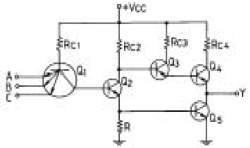
- Q2,Q3
- Q3,Q4
- Q2,Q4
- Q2,Q5
(정답률: 알수없음)
18. 다음 회로에 대한 설명 중 틀린 것은 ?
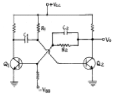
- 이회로는 단안정 멀티바이브레이터이다.
- 안정상태는 Q1 = ON, Q2 = OFF 상태이다.
- 출력펄스폭의 계산은 T悰0.69 R1C1 이다.
- C2는 Q1의 상태변화를 가속화시켜주는 가속용 콘덴서이다.
(정답률: 알수없음)
19. 불 대수식
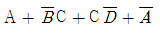
를 간단히 하면?- 1
- A
- B
- C
(정답률: 알수없음)
20. I = Ic(1 + m sin wmt)sin wct인 피변조파의 전류가 임피던스 값이 R인 회로에 흐를 때 상측대파의 평균 전력은? (단, 변조도는 m 이다.)
- m2Ic2R/8
- m2Ic2R/6
- m2Ic2R/4
- m2Ic2R/2
(정답률: 알수없음)
2과목: 무선통신 기기
21. CDMA에 관련된 사항이 아닌 것은?
- SCPC (Single Channel Per Carrier)
- 주파수도약 (FH)
- Spread-Spectrum 기술
- 확산코드(Spreading Code)
(정답률: 알수없음)
22. 발진 주파수의 안정화를 위해 콜피츠 발진기를 변형한 발진회로는?
- 하틀리 발진기
- 클랩 발진기
- 오버톤 발진기
- 이상형 발진기
(정답률: 알수없음)
23. 전계강도 측정에 관한 설명으로 가장 거리가 먼 것은?
- 전계강도 측정기는 내부 잡음에 의한 오차가 생길수 있다.
- 전계강도는 송신기 출력의 제곱에 비례한다.
- 전계강도 측정 시 주위에 전화선이나 배전선등이 있을 때는 정확한 측정이 곤란하다.
- 전계강도는 ㎶/m로 표시된다.
(정답률: 알수없음)
24. 슈퍼 헤테로다인 수신기에서 중간 주파수가 높아지면 근접주파수 선택도는 어떻게 되는가?
- 대역폭이 커지므로 나빠진다.
- 이득이 크게되어 좋아진다.
- 이조도가 크게되어 좋아진다.
- 중간주파수와 관계없이 일정하다.
(정답률: 알수없음)
25. 수정발진기에서 수정발진자와 병렬로 콘덴서(약 20PF)를 삽입했을 경우 일반적으로 발진주파수와 발진출력은 어떻게 변화하는가 ?
- 발진주파수는 감소하고 발진출력은 증가한다.
- 발진주파수는 증가하고 발진출력은 감소한다.
- 발진주파수와 발진출력 모두 감소한다.
- 발진주파수와 발진출력 모두 증가한다.
(정답률: 알수없음)
26. 무선기기의 통신 방식중 피변조파의 대역폭이 가장 좁은 변조 방식은 ?
- AM방식
- PAM방식
- FS전신방식
- FM방식
(정답률: 알수없음)
27. SSB수신기에서 자동 이득 조정이 곤란한 이유는?
- 측대파가 없으므로
- 신호 주파수가 적으므로
- 송신 출력이 적으므로
- 반송파가 없으므로
(정답률: 알수없음)
28. 펄스 카운터에 의한 FM검파기의 구성과 가장 관계가 먼 것은?
- 리미터
- 미분회로
- 위상비교기
- LPF
(정답률: 알수없음)
29. 다음 중 FM수신기의 스켈치(Squelch) 회로의 설명에 맞지 않는 것은?
- 잡음 증폭과 잡음 정류 기능을 갖추고 있다.
- 수신기 감도 및 이득를 향상시켜 준다.
- 잡음이 커지면 자동적으로 가청 주파수 증폭기 기능을 정지한다.
- 수신 신호가 약하거나 없을 때, 잡음 출력이 커질 때 이를 방지한다.
(정답률: 알수없음)
30. 다음 발진기중 CR 발진기는?
- 콜렉터 동조
- Wein브리지
- 콜피츠
- 하아틀리
(정답률: 알수없음)
31. SSB통신에서 Speech clarifier를 행하는 목적은 ?
- 반송파의 발진을 잘 하기 위하여
- 전반송파 신호만을 수신하기 위하여
- 반송파와 수신기의 국부 발진 주파수와의 편차를 적게 하기 위하여
- 저주파 증폭단의 증폭도를 높이기 위하여
(정답률: 알수없음)
32. 전원회로에서 무부하시 출력단자 전압이 100[V]이고, 부하를 연결했을 때의 출력단자 전압이 80[V]이었다. 전압변동률은 몇[%] 인가?
- 15
- 20
- 25
- 30
(정답률: 알수없음)
33. 진폭 변조 송신기의 최대 출력이 100[W]일 때 변조도[25%]로 변조하면 상하측 대역의 전력은 대략 얼마인가?
- 3W
- 25W
- 50W
- 97W
(정답률: 알수없음)
34. 다음 중 FM 송신기의 구성요소로서 맞지 않는 것은?
- 발진회로
- 스켈치회로
- 변조회로
- 증폭회로
(정답률: 알수없음)
35. 접지 안테나의 접지 저항 측정법이 아닌 것은?
- 볼로메터 브리지에 의한 측정
- 코올라우시 브리지에 의한 측정
- 교류 브리지에 의한 측정
- 비헤르트법에 의한 측정
(정답률: 알수없음)
36. 전파 정류회로에서 정류 효율은 반파 정류 회로의 몇 배까지 얻어질 수 있는가?
- 2배
- 4배
- 6배
- 8배
(정답률: 알수없음)
37. 스미스 도표(Smith chart)에 의해 정규화 임피던스를 구한 결과 1.0 + j1.5를 얻었다. 지금 전송선로의 특성 임피던스를 50Ω이라 하면 부하 임피던스는 얼마인가?
- 50 + j 75 Ω
- 50 - j 75 Ω
- 75 + j 5 Ω
- 5 - j 75 Ω
(정답률: 알수없음)
38. 다음 중 외부의 잡음 및 간섭으로부터 정보신호를 신뢰성 있게 복조할 수 있는 한계를 무엇이라 하는가?
- 재밍마진(jamming margin)
- 드롭마진(drop margin)
- 히트(hit)
- 캡처(capture)
(정답률: 알수없음)
39. 무선 송신기에 있어서 수정발진부를 안전하게 유지하기 위한 방법을 설명한 것이다. 잘못된 것은?
- 수정편이 온도의 변화에 발진주파수가 변동하는 것을 방지하기 위해 항온조로 보호한다.
- 부하의 변동으로 발진주파수가 변동하는 것을 막기 위해 발진부 후단에 완충증폭기를 둔다.
- 외부의 기계적인 진동을 막기 위하여 보완장치를 한다.
- 피어스형은 동조회로의 동조주파수와 수정진동자의 출력주파수를 정확히 일치하도록 하여야 한다.
(정답률: 알수없음)
40. 100[㎒]의 반송파를 최대 주파수 편이 75[㎑]로 하고 15[㎑]의 신호파로 FM변조했을 경우의 변조지수와 주파수 대역폭은 각각 얼마인가?
- mf=5, BW=180[㎑]
- mf=6.7, BW=90[㎑]
- mf=6.7, BW=190[㎑]
- mf=5, BW=360[㎑]
(정답률: 알수없음)
3과목: 안테나 공학
41. Bellini-Tosi 안테나에서 전계 강도를 최대로 하려면 탐색코일의 방향과 전파도래 방향의 위상차를 얼마로 해야 하는가?
- 0°
- 15°
- 30°
- 45°
(정답률: 알수없음)
42. 자유 공간에 놓인 반파장 다이폴 안테나의 중앙부 전류가 2[A]인 때에 이 안테나의 축과 직각방향으로 20[km] 떨어진 지점에서의 전계강도는 얼마인가? (단, 안테나에서의 손실은 무시한다.)
- 2 [mV/m]
- 3 [mV/m]
- 6 [mV/m]
- 9 [mV/m]
(정답률: 알수없음)
43. 평면파가 경계면에 수직으로 입사하여 반사되는 경우 입사파의 크기가 10[㎷/m]이고 반사파의 크기가 5[㎷/m]인 경우 전압 정재파비(VSWR)는 얼마인가 ?
- 3.0
- 2.0
- 1.5
- 2.5
(정답률: 알수없음)
44. 주파수 5[㎒]용 수평 반파 다이폴 안테나의 길이는 ?
- 30[m]
- 60[m]
- 90[m]
- 120[m]
(정답률: 알수없음)
45. 반파장 다이폴 안테나가 있다. 안테나로 부터의 거리가 d[m] ,안테나 복사전력을 Pr[W]라 할 때 발생되는 최대 전계강도[V/m]는 ?
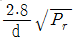
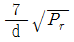
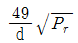
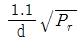
(정답률: 알수없음)
46. 다음은 여러종류의 안테나를 급전점의 임피던스가 낮은 것부터 순서로 배열한 것이다. 옳은 것은 ? (단, a : 동축형 sleeve안테나, b : 동축형 Brown안테나, c : 반파장 folded안테나(한번접힘), d : Rhombic안테나)
- a - b - c - d
- b - a - c - d
- c - a - b - d
- c - b - a - d
(정답률: 알수없음)
47. 안테나의 고유주파수를 높이기 위한 가장 적당한 방법은?
- 안테나에 병렬로 코일을 접속한다.
- 안테나에 직렬로 코일을 접속한다.
- 안테나에 직렬로 콘덴서를 접속한다.
- 안테나에 병렬로 콘덴서를 접속한다.
(정답률: 알수없음)
48. 전리층의 전자밀도의 최대치가 Nm이라 할 때 전리층에서 반사되는 최대 주파수 fc는?
- Nm에 비례한다.
- Nm2에 비례한다.
 에 비례한다.
에 비례한다.- Nm에 반비례한다.
(정답률: 알수없음)
49. 다음중 수평면에서 무지향성을 나타내는 안테나는?
- 1/4 파장 수직접지 안테나
- 정재파 V형 안테나
- 애드코크(Adcock)안테나
- 야기(Yagi)안테나
(정답률: 알수없음)
50. 다음 중 송신 공중선으로부터 먼 거리에서 통신에 기여하는 것은?
- 정전계
- 정자계
- 유도전계
- 복사전계
(정답률: 알수없음)
51. 그림과 같은 반파장 안테나에서 급전선의 최소길이 ℓ은? (단, 파장(λ ) = 40[m], 전압급전 병렬공진 방식이다.)
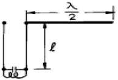
- 10[m]
- 20[m]
- 30[m]
- 40[m]
(정답률: 알수없음)
52. 선로에 진행파와 반사파가 동시에 존재할 때 양파의 합성파를 정재파라 하며 전압 정재파의 최대값과 최소값의 비를 전압 정재파비(VSWR)라 한다. 이 VSWR와 반사계수와는 어떤 관계가 성립하는가? (단, VSWR를 S,반사계수를 Γ라 한다.)
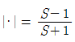
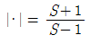
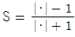
- S = (·+1)2
(정답률: 알수없음)
53. Es(산재 E층)전리층에 대한 설명중 옳지 않은 것은?
- Es층은 항상 존재한다.
- Es층의 출현은 장소에 따라 다르다.
- Es층은 태양의 흑점주기와 별로 관계가 없는 것으로 알려져 있다.
- Es층은 E층과 거의 동일한 높이에서 생긴다.
(정답률: 알수없음)
54. 라디오 덕트(Radio duct)는 온도의 역전층 및 높이에 의한 굴절률 변동에 의해 발생한다. 굴절율의 역전층에 대한 관계식은? [단, M : M단위 수정굴절률, h : 지상높이]
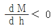
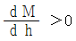
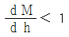
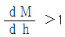
(정답률: 알수없음)
55. 다음은 야기(Yagi) 안테나의 반사기에 대한 설명이다. 올바른 것은? [단, ∴는 파장](문제 오류로 복원중입니다. 정확한 보기 내용을 아시는분께서는 오류 신고를 통하여 내용 작성 부탁드립니다. 정답은 1번입니다.)
- 반사기는 복원중∴보다 길게 되어 있으므로 유도성분을 갖는다.
- 반사기는 복원중∴보다 길게 되어 있으므로 용량성분을 갖는다.
- 반사기는 ∴보다 길게 되어 있으므로 유도성분을 갖는다.
- 반사기는 ∴보다 길게 되어 있으므로 용량성분을 갖는다.
(정답률: 알수없음)
56. Beam안테나의 지선에 애자를 어떤 간격마다 여러개 분할하여 넣는 가장 큰 이유는 ?
- 낙뇌 방지를 위해서
- 지선의 강도를 보강하기 위해서
- 짧은 지선을 활용하기 위해서
- 복사 특성 변화를 작게하기 위해서
(정답률: 알수없음)
57. 다음 중 마이크로파 통신에 사용되는 안테나와 관계 적은 것은?
- 카세그레인(Cassegrain) 안테나
- 혼 반사기(horn reflector) 안테나
- 파라보라(parabola) 안테나
- 수직접지 안테나
(정답률: 알수없음)
58. 초단파의 전파특성에 대한 설명 중 틀린 것은?
- 지표파는 감쇄가 거의 없으므로 원거리 통신에 이용 가능하다.
- 직접파와 대지 반사파에 의하여 수신 전계가 정해진다.
- 초단파의 가시거리는 광학적 가시거리 보다 길다.
- 대류권 산란파 등에 의하여 초가시거리 통신이 가능하다.
(정답률: 알수없음)
59. 루프 안테나(Loop Antenna)의 특성에 속하지 않는 것은 ?
- 급전선과의 정합이 어렵다.
- 수평면내 지향성 특성이 8자형이다.
- 소형으로 이동이 용이하다.
- 주간오차가 크다.
(정답률: 알수없음)
60. 3㎓ - 30㎓범위내에 해당하는 주파수대는 ?
- HF
- VHF
- MF
- SHF
(정답률: 알수없음)
4과목: 무선통신 시스템
61. 이동통신에서 발생되는 원근단간섭을 해결하기 위한 방법은?
- 이동국의 송신출력을 제어하는 전력제어를 행한다.
- 강력한 에러정정부호를 사용한다.
- 페이딩이 발생되지 않도록 한다.
- 통화채널전환(handover)을 수행한다.
(정답률: 알수없음)
62. 무선 송신기에서 발생되는 고조파의 방사를 억제하기 위해서는 어떤 방법을 사용하는가?
- 안테나를 보기 좋은 모양으로 바꾼다.
- 송신기 종단 동조회로의 Q를 크게 한다.
- 송신기 종단과 안테나 사이에 저조파 필터를 삽입한다.
- 급전선의 길이를 길게 한다.
(정답률: 알수없음)
63. 지구국 안테나의 성능조건에 해당하지 않는 것은 ?
- 고이득이어야 한다.
- 잡음온도의 상승이 낮아야 한다.
- 양호한 지향성을 가져야 한다.
- 가급적 앙각이 넓어지도록 설계되어야 한다.
(정답률: 알수없음)
64. Microwave 통신에서 잡음방해에 대한 개선방법으로 적합하지 않은 것은 ?
- 송신전력을 크게 하거나 안테나의 지향성을 예민하게 하여 이득을 높힘으로서 수신전력을 크게 한다.
- 수신기의 설계를 적절하게 하여 내부잡음을 적게 한다.
- 인공잡음의 발생원에 필터를 삽입하거나 차폐시킨다.
- 광대역 증폭기를 사용하여 출력을 크게 한다.
(정답률: 알수없음)
65. 위성통신에서 하나의 트랜스폰더를 여러 지구국이 공용할 수 있도록 트랜스폰더의 주파수대역폭을 분할하여 지상국에 배당 시켜주므로서 지구국들이 간섭없이 서로 통신할 수 있게 하는 회선접속방식은 ?
- FDMA(Frequency Division Multiple Access)
- TDMA(Time Division Multiple Access)
- CDMA(Code Division Multiple Access)
- VDMA(Virtical Division Multiple Access)
(정답률: 알수없음)
66. 적도위에 고도 약 35,860[㎞]로 띄어진 위성으로 지구의 자전주기와 위성의 공전주기를 같게 하여 적도상에 등간격으로 3개 정도를 배치하여 전세계를 커버할 수 있어 경제적인 위성통신을 할 수 있는 방식은 ?
- random 위성방식
- 위상 위성방식
- 정지궤도 위성방식
- 다중 위성방식
(정답률: 알수없음)
67. 통신위성의 공통기기에 해당되지 않는 것은 ?
- 추진계
- 감시제어 신호전송계
- 진동발생계
- 자세제어계
(정답률: 알수없음)
68. 페이딩(fading)의 발생요인에 해당되지 않는 것은?
- 다중 경로 전파
- 이동체의 속도
- 주위 물체들의 속도
- 시스템의 열잡음
(정답률: 알수없음)
69. 마이크로웨이브 무선중계방식 중에서 검파중계방식에 관한 설명 중 가장 관계가 먼 것은?
- 펄스통신에서는 S/N 비가 좋다.
- 중간중계소에서 회선의 분기, 삽입이 가능하다.
- RF신호에서 IF신호로 증폭하여 송출한다.
- 복조기가 있어야 한다.
(정답률: 알수없음)
70. 다음 중 단파를 이용한 통신방식이 장파를 이용한 방식 보다 좋은 점으로서 틀린 것은?
- 페이딩의 영향이 없다.
- 소전력으로 원거리 통신을 할 수 있다.
- 안테나의 복사능률이 좋다.
- 공전 방해가 적다.
(정답률: 알수없음)
71. 펄스부호변조방식(PCM) 통신의 특징 설명 중 잘못된 것은?
- 동일 송신출력에 대하여 중계소간의 거리를 크게 할 수 있다.
- 동일 회선거리에 대하여 송신전력은 적어도 된다.
- 전송로에 사용되는 모든 장치는 Analog 기술로 실현된다.
- PCM 전송기술과 교환기술과의 대응이 완전해진다.
(정답률: 알수없음)
72. 다음 중 무선통신의 특징이 아닌 것은 ?
- 잡음이 거의 없이 통신이 가능하다.
- 무한한 공간을 공통의 전송로로써 사용한다.
- 수신점에는 목적외의 전자파가 많이 포함되어 있다.
- 전자파의 대역폭 중에서 어느 정도의 대역폭을 필요로 한다.
(정답률: 알수없음)
73. AM 송신기의 고조파 왜곡을 감소시키는 방법으로 가장 적당한 것은?
- Pre-distorter 사용
- 스퀄치 회로 사용
- Limiter 회로 사용
- 부궤환 방식 채용
(정답률: 알수없음)
74. 무선통신 시스템에서 Fading margin 이란?
- 전파의 전파시 발생하는 fading 중 가장 큰 값으로서 시스템 설계시 중요한 값이다.
- 전파의 전파시 발생하는 fading 중 가장 작은 값으로서 시스템 설계시 중요한 값이다.
- 무선통신환경에서 발생하는 fading을 고려한 여유도로서 시스템 설계시 중요한 값이다.
- 무선통신환경에서 발생하는 fading의 최대치를 최소치로 나눈 데시벨 값이다.
(정답률: 알수없음)
75. 수신 FM 신호 r(t)=5cos[2Å⒡106t + 200sin(2Å⒡500t)] 인 경우 수신 파형의 대역폭은? (단, Carson의 법칙을 적용)
- 100[kHz]
- 152[kHz]
- 201[kHz]
- 225[kHz]
(정답률: 알수없음)
76. 다음 중 DSB에 비해 SSB 통신방식의 특징이 아닌 것은 ?
- 높은 주파수의 안정도가 필요없다.
- S/N비가 개선된다.
- 점유주파수대 폭이 협소하다.
- 선택형 페이딩의 영향을 쉽게 받지 않는다.
(정답률: 알수없음)
77. 이득이 10[㏈]이고 잡음지수가 15[㏈]인 증폭기의 후단에 잡음지수가 18[㏈]인 2단 증폭기가 있다. 종합 잡음지수는 얼마인가?
- 10 [㏈]
- 15 [㏈]
- 16.7 [㏈]
- 18 [㏈]
(정답률: 알수없음)
78. 무선통신 시스템의 운용 중에서 발생하는 여려가지 현상 중 통신에 방해가 되는 효과와 이를 제거하기 위한 기술이 잘못 연결된 것은?
- Fading - Space Diversity
- Gaussian Noise - Equalizer
- Echo - Canceller
- Doppler - AFC(자동 주파수 조절)회로
(정답률: 알수없음)
79. PCM(펄스부호화변조) 통신방식 과정에서 나타나는 신호가 아닌 것은?
- PAM 신호
- 양자화된 신호
- 멀티레이트 신호
- 시분할 다중신호
(정답률: 알수없음)
80. 위성안테나 중 좁은 지역에 대한 스폿 빔(spot beam)을 만드는데 사용하는 것은?
- 무지향성 안테나
- 파라볼라 안테나
- 혼 안테나
- 헬리컬 안테나
(정답률: 알수없음)
5과목: 전자계산기 일반 및 무선설비기준
81. 다음 중 10진수 0.834를 8진수로 변환한 결과와 가장 가까운 것은?
- (0.653)8
- (0.764)8
- (0.631)8
- (0.521)8
(정답률: 알수없음)
82. 컴퓨터의 논리회로를 발전 순서대로 나열한 것은?
- 집적회로 栓 트랜지스터 栓 진공관 栓 고밀도 집적회로
- 진공관 栓 집적회로 栓 트랜지스터 栓 고밀도 집적회로
- 트랜지스터 栓 진공관 栓 집적회로 栓 고밀도 집적회로
- 진공관 栓 트랜지스터 栓 집적회로 栓 고밀도 집적회로
(정답률: 알수없음)
83. (011111100000)2의 값을 갖는 레지스터의 내용을 오른쪽으로 네 번 시프트 시켰다면, 실제로 이 레지스터가 수행한 연산은 무엇인가?
- added -400
- multiplied by 4
- divided by 4
- divided by 16
(정답률: 알수없음)
84. 다음에 실행할 명령어가 기억되는 주기억장치의 번지를 기억하고 있는 레지스터로 명령어가 수행될 때 마다 1∼4바이트의 일정한 값 만큼씩 증가되는 레지스터는?
- PC
- IR
- PSW
- MAR
(정답률: 알수없음)
85. 순서도(flowchart)의 기본 형태가 아닌 것은?
- 직선형 순서도
- 분기형 순서도
- 세분화형 순서도
- 반복형 순서도
(정답률: 알수없음)
86. 프로그램이 수행되는 도중에 인터럽트가 발생되면 현 사이클의 일을 끝내고 인터럽트 처리를 한다. 이 때 인터럽트를 끝내고 프로그램이 수행될 수 있도록 현상태를 보관하는 장소의 위치와 가장 관계가 깊은 것은?
- 상태 레지스터
- 프로그램 계수기
- 스택포인터
- 인덱스 레지스터
(정답률: 알수없음)
87. 연산장치에서 뺄셈을 계산할 때 사용하는 방법은 ?
- 피감수에서 감수를 직접 뺀다.
- 보수(complement)를 사용하여 덧셈 계산한다.
- 쉬프트(shift)방법을 이용하여 감산한다.
- 비트마크(bit mark)방법을 사용하여 감산한다.
(정답률: 알수없음)
88. 다음 중에서 캐시 메모리를 사용하는 이유로 가장 적당한 것은?
- 기억 용량이 증가한다.
- 기억 용량이 감소한다.
- 프로그램의 총 실행 시간을 단축시킬 수 있다.
- 평균 액세스 시간을 연장 하기 위해 사용한다.
(정답률: 알수없음)
89. 다음 중 deadlock의 발생 조건이 아닌 것은?
- 선취 조건
- 상호 배제 조건
- 환형 대기 조건
- 점유와 대기 조건
(정답률: 알수없음)
90. 2진수 ( 100011 )2의 2의 보수는 얼마인가?
- 100011
- 011100
- 011101
- 011110
(정답률: 알수없음)
91. 다음 중 정보통신기기인증규칙에 의한 형식검정을 받아야 하는 무선설비는?
- 이동가입무선전화장치
- 라디오존데
- 특정소출력무선국용 무선설비의 기기
- 디지털선택호출전용수신기
(정답률: 알수없음)
92. 산업용·의료용 전파응용설비 이외의 기타 전파응용설비로서 고주파출력이 500와트 이하인 것의 전계강도 허용치는 30미터 거리에서 얼마이하 이어야 하는가?
- 500㎶/m
- 200㎶/m
- 100㎶/m
- 50㎶/m
(정답률: 알수없음)
93. 다음 중 공중선전력의 허용편차가 틀린 것은?
- 중파방송을 행하는 방송국의 송신설비 : 상한 5%, 하한 10%
- 텔레비젼방송을 행하는 방송국의 송신설비 : 상한 10%, 하한 20%
- 아마추어무선국의 송신설비 : 상한 30%, 하한50%
- 비상위치지시용 무선표지설비 : 상한50%, 하한20%
(정답률: 알수없음)
94. 허가유효기간이 1년인 무선국의 재허가 신청은 허가유효기간 만료 얼마전에 해야하는가?
- 1월
- 2월
- 3월
- 4월
(정답률: 알수없음)
95. 다음 중 무선설비규칙에서 사용하는 용어의 정의가 맞지 않는 것은?
- 평균전력(PY) : 송신공중선계의 급전선에 공급되는 전력으로서 변조에 사용되는 최저주파수의 1주기와 비교하여 충분히 긴 시간동안에 걸쳐 평균한 것
- 첨두포락선전력(PX) : 송신공중선계의 급전선에 공급되는 전력으로서 변조포락선의 첨두에서 무선주파수 1주기 동안에 걸쳐 평균한 것
- 반송파전력(PZ) : 변조상태에서 송신장치로부터 송신공중선계의 급전선에 공급되는 전력으로서 변조주파수 1주기 동안에 걸쳐 평균한 것
- 규격전력(PR) : 송신장치의 종단증폭기의 정격출력
(정답률: 알수없음)
96. 전파형식별 공중선전력의 표시로 틀린 것은?
- J3E - 첨두포락선전력
- F3E - 첨두포락선전력
- A3C(전반송파 단속) - 첨두포락선전력
- A3E(방송국 설비) - 반송파전력
(정답률: 알수없음)
97. 무선설비의 보호장치 또는 안전장치와 관계가 없는 것은?
- 전원 자동차단기
- 절연차폐체
- 퓨즈
- 라디오부의
(정답률: 알수없음)
98. 주파수할당에 관한 용어의 정의가 옳게 설명된 것은?
- 특정한 주파수를 이용할 수 있는 권리를 특정인에게 부여 하는 것을 말한다.
- 무선국을 허가함에 있어 당해 무선국이 이용할 특정한 주파수를 지정하는 것을 말한다.
- 무선국을 운용할 때 불요파 발사를 억제하기 위한 주파수를 지정하는 것을 말한다.
- 설치된 무선설비가 반응할 수 있도록 필요한 주파수를 지정하는 것을 말한다.
(정답률: 알수없음)
99. 송신설비의 공중선 및 급전선에 고압전기를 통하는 장치는 사람이 보행하거나 기거하는 평면으로부터 몇 미터이상의 높이에 설치하여야 하는가?
- 2.0 m
- 2.5 m
- 3.0 m
- 3.5 m
(정답률: 알수없음)
100. 정보통신기기 인증신청서에 첨부하여야 할 서류가 아닌 것은?
- 기기의 개요, 사양, 구성, 조작방법 등의 설명서
- 외관도 및 부품의 배치표시도
- 기기의 제작공정
- 종합계통도
(정답률: 알수없음)